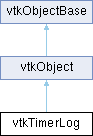

|
Etrek
|
|
Etrek
|
Timer support and logging. More...
#include <vtkTimerLog.h>

Public Member Functions | |
| vtkTypeMacro (vtkTimerLog, vtkObject) | |
| void | PrintSelf (ostream &os, vtkIndent indent) override |
| void | StartTimer () |
| void | StopTimer () |
| double | GetElapsedTime () |
| Public Member Functions inherited from vtkObject | |
| vtkBaseTypeMacro (vtkObject, vtkObjectBase) | |
| virtual void | DebugOn () |
| virtual void | DebugOff () |
| bool | GetDebug () |
| void | SetDebug (bool debugFlag) |
| virtual void | Modified () |
| virtual vtkMTimeType | GetMTime () |
| void | RemoveObserver (unsigned long tag) |
| void | RemoveObservers (unsigned long event) |
| void | RemoveObservers (const char *event) |
| void | RemoveAllObservers () |
| vtkTypeBool | HasObserver (unsigned long event) |
| vtkTypeBool | HasObserver (const char *event) |
| vtkTypeBool | InvokeEvent (unsigned long event) |
| vtkTypeBool | InvokeEvent (const char *event) |
| std::string | GetObjectDescription () const override |
| unsigned long | AddObserver (unsigned long event, vtkCommand *, float priority=0.0f) |
| unsigned long | AddObserver (const char *event, vtkCommand *, float priority=0.0f) |
| vtkCommand * | GetCommand (unsigned long tag) |
| void | RemoveObserver (vtkCommand *) |
| void | RemoveObservers (unsigned long event, vtkCommand *) |
| void | RemoveObservers (const char *event, vtkCommand *) |
| vtkTypeBool | HasObserver (unsigned long event, vtkCommand *) |
| vtkTypeBool | HasObserver (const char *event, vtkCommand *) |
| template<class U, class T> | |
| unsigned long | AddObserver (unsigned long event, U observer, void(T::*callback)(), float priority=0.0f) |
| template<class U, class T> | |
| unsigned long | AddObserver (unsigned long event, U observer, void(T::*callback)(vtkObject *, unsigned long, void *), float priority=0.0f) |
| template<class U, class T> | |
| unsigned long | AddObserver (unsigned long event, U observer, bool(T::*callback)(vtkObject *, unsigned long, void *), float priority=0.0f) |
| vtkTypeBool | InvokeEvent (unsigned long event, void *callData) |
| vtkTypeBool | InvokeEvent (const char *event, void *callData) |
| virtual void | SetObjectName (const std::string &objectName) |
| virtual std::string | GetObjectName () const |
| Public Member Functions inherited from vtkObjectBase | |
| const char * | GetClassName () const |
| virtual vtkTypeBool | IsA (const char *name) |
| virtual vtkIdType | GetNumberOfGenerationsFromBase (const char *name) |
| virtual void | Delete () |
| virtual void | FastDelete () |
| void | InitializeObjectBase () |
| void | Print (ostream &os) |
| void | Register (vtkObjectBase *o) |
| virtual void | UnRegister (vtkObjectBase *o) |
| int | GetReferenceCount () |
| void | SetReferenceCount (int) |
| bool | GetIsInMemkind () const |
| virtual void | PrintHeader (ostream &os, vtkIndent indent) |
| virtual void | PrintTrailer (ostream &os, vtkIndent indent) |
| virtual bool | UsesGarbageCollector () const |
Static Public Member Functions | |
| static vtkTimerLog * | New () |
| static void | SetLogging (int v) |
| static int | GetLogging () |
| static void | LoggingOn () |
| static void | LoggingOff () |
| static void | FormatAndMarkEvent (const char *format,...) VTK_FORMAT_PRINTF(1 |
| static void | DumpLogWithIndents (ostream *os, double threshold) |
| static void | DumpLogWithIndentsAndPercentages (ostream *os) |
| static void | MarkEvent (const char *EventString) |
| static void | ResetLog () |
| static void | CleanupLog () |
| static double | GetUniversalTime () |
| static double | GetCPUTime () |
| static void | SetMaxEntries (int a) |
| static int | GetMaxEntries () |
| static void static void | DumpLog (VTK_FILEPATH const char *filename) |
| static void | MarkStartEvent (const char *EventString) |
| static void | MarkEndEvent (const char *EventString) |
| static void | InsertTimedEvent (const char *EventString, double time, int cpuTicks) |
| static int | GetNumberOfEvents () |
| static int | GetEventIndent (int i) |
| static double | GetEventWallTime (int i) |
| static const char * | GetEventString (int i) |
| static vtkTimerLogEntry::LogEntryType | GetEventType (int i) |
| Static Public Member Functions inherited from vtkObject | |
| static vtkObject * | New () |
| static void | BreakOnError () |
| static void | SetGlobalWarningDisplay (vtkTypeBool val) |
| static void | GlobalWarningDisplayOn () |
| static void | GlobalWarningDisplayOff () |
| static vtkTypeBool | GetGlobalWarningDisplay () |
| Static Public Member Functions inherited from vtkObjectBase | |
| static vtkTypeBool | IsTypeOf (const char *name) |
| static vtkIdType | GetNumberOfGenerationsFromBaseType (const char *name) |
| static vtkObjectBase * | New () |
| static void | SetMemkindDirectory (const char *directoryname) |
| static bool | GetUsingMemkind () |
Static Protected Member Functions | |
| static void | MarkEventInternal (const char *EventString, vtkTimerLogEntry::LogEntryType type, vtkTimerLogEntry *entry=nullptr) |
| static vtkTimerLogEntry * | GetEvent (int i) |
| static void | DumpEntry (ostream &os, int index, double time, double deltatime, int tick, int deltatick, const char *event) |
| Static Protected Member Functions inherited from vtkObjectBase | |
| static vtkMallocingFunction | GetCurrentMallocFunction () |
| static vtkReallocingFunction | GetCurrentReallocFunction () |
| static vtkFreeingFunction | GetCurrentFreeFunction () |
| static vtkFreeingFunction | GetAlternateFreeFunction () |
Protected Attributes | |
| double | StartTime |
| double | EndTime |
| Protected Attributes inherited from vtkObject | |
| bool | Debug |
| vtkTimeStamp | MTime |
| vtkSubjectHelper * | SubjectHelper |
| std::string | ObjectName |
| Protected Attributes inherited from vtkObjectBase | |
| std::atomic< int32_t > | ReferenceCount |
| vtkWeakPointerBase ** | WeakPointers |
Additional Inherited Members | |
| Protected Member Functions inherited from vtkObject | |
| void | RegisterInternal (vtkObjectBase *, vtkTypeBool check) override |
| void | UnRegisterInternal (vtkObjectBase *, vtkTypeBool check) override |
| void | InternalGrabFocus (vtkCommand *mouseEvents, vtkCommand *keypressEvents=nullptr) |
| void | InternalReleaseFocus () |
| Protected Member Functions inherited from vtkObjectBase | |
| virtual void | ReportReferences (vtkGarbageCollector *) |
| vtkObjectBase (const vtkObjectBase &) | |
| void | operator= (const vtkObjectBase &) |
Timer support and logging.
vtkTimerLog contains walltime and cputime measurements associated with a given event. These results can be later analyzed when "dumping out" the table.
In addition, vtkTimerLog allows the user to simply get the current time, and to start/stop a simple timer separate from the timing table logging.
|
static |
Remove timer log.
|
static |
Write the timing table out to a file. Calculate some helpful statistics (deltas and percentages) in the process.
|
static |
|
static |
Returns the CPU time for this process On Win32 platforms this actually returns wall time.
| double vtkTimerLog::GetElapsedTime | ( | ) |
Returns the difference between StartTime and EndTime as a doubleing point value indicating the elapsed time in seconds.
|
static |
Programmatic access to events. Indexed from 0 to num-1.
|
static |
Returns the elapsed number of seconds since 00:00:00 Coordinated Universal Time (UTC), Thursday, 1 January 1970. This is also called Unix Time.
|
static |
Insert an event with a known wall time value (in seconds) and cpuTicks.
|
static |
Record a timing event and capture wall time and cpu ticks.
|
staticprotected |
Record a timing event and capture wall time and cpu ticks.
|
static |
I want to time events, so I am creating this interface to mark events that have a start and an end. These events can be, nested. The standard Dumplog ignores the indents.
|
overridevirtual |
|
static |
Clear the timing table. walltime and cputime will also be set to zero when the first new event is recorded.
|
inlinestatic |
This flag will turn logging of events off or on. By default, logging is on.
|
static |
Set/Get the maximum number of entries allowed in the timer log
| void vtkTimerLog::StartTimer | ( | ) |
Set the StartTime to the current time. Used with GetElapsedTime().
| void vtkTimerLog::StopTimer | ( | ) |
Sets EndTime to the current time. Used with GetElapsedTime().